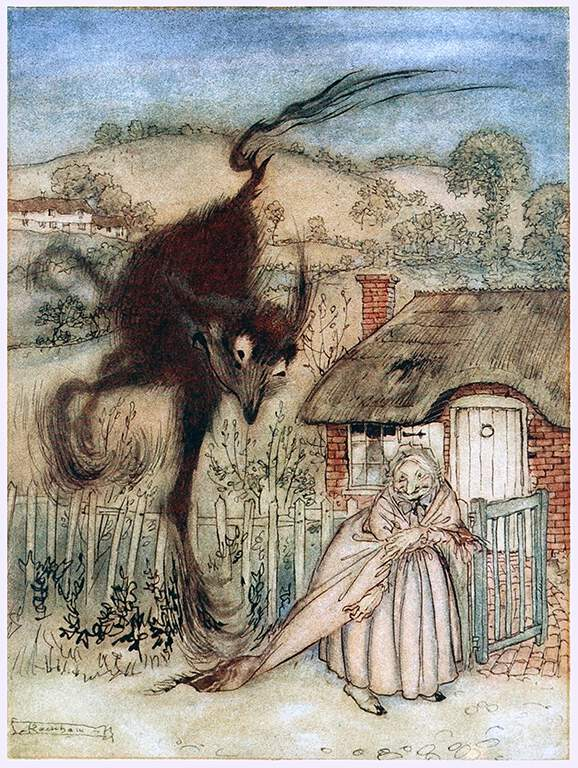

A woman finds a pot of treasure on the road while she is returning from work. Delighted (very happy) with her luck, she decides to keep it. As she is taking it home, it keeps changing. However, her enthusiasm refuses to fade away (disappear or faint slowly). What Is Great About It: The old lady in this story is one of the most cheerful characters anyone can encounter in English fiction. Her positive disposition (personality) tries to make every negative situation seem like a gift, and she helps us look at luck as a matter of our view rather than events.
